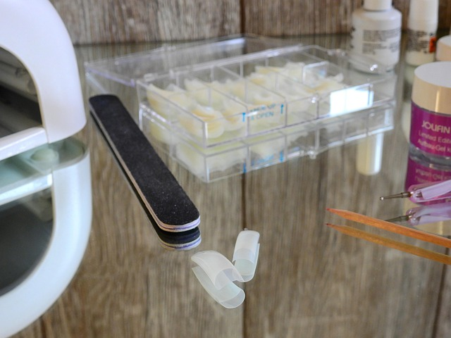
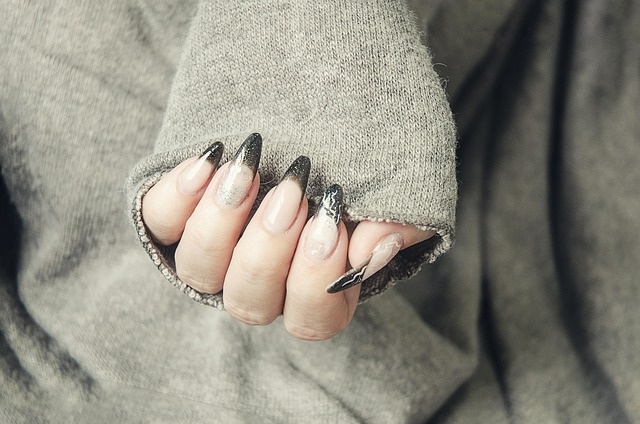
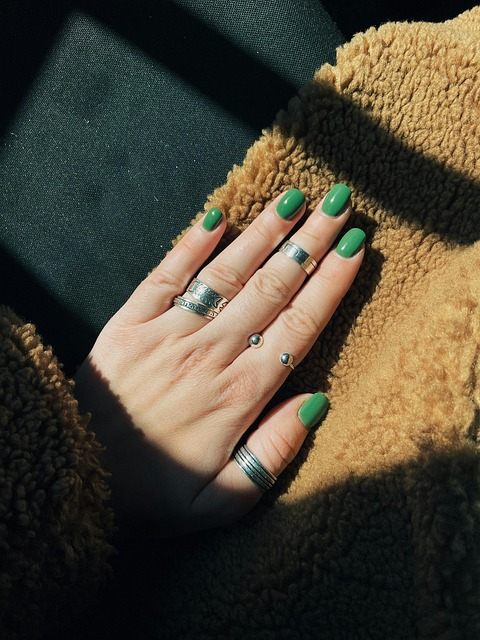

The First Few Steps Are to Gather Your Supplies Clean Your Nails Up And Pick Out The Colors You Want.
You Dont Have TO follow In THe Steps Of Others But YOu Can Aslo Have Inspirational Picture To Help You Decide

I Always Have 2 Or More Ispirational Pictures Just Incase, But There Is No Limit.
 Then Once You Are Ready You Can Finally Start My Favorite Part Designing And Painting Your Nails.
Then Once You Are Ready You Can Finally Start My Favorite Part Designing And Painting Your Nails.